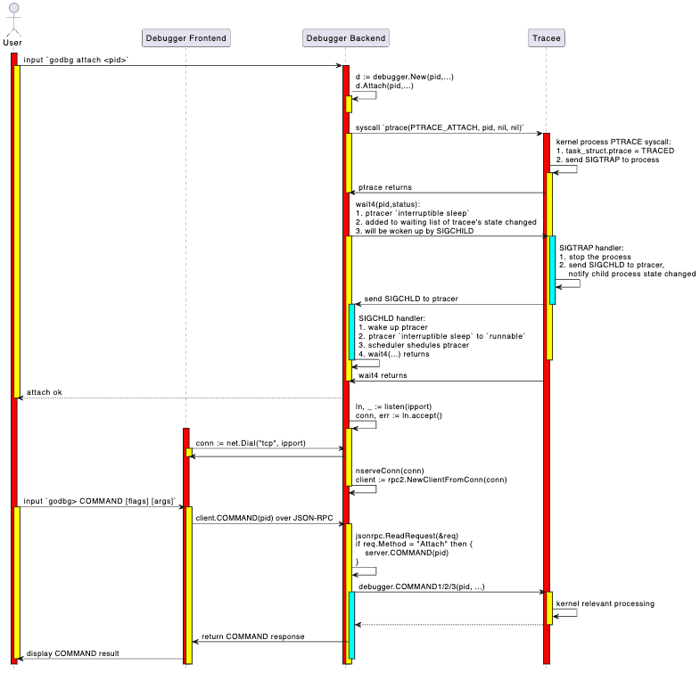

Debug Session
Implementation Goals
The commands attach, exec, debug, core, and connect essentially all start a debugger backend and establish a connection between the debugger frontend and backend.
After establishing the connection, the debugger frontend needs to create a debug session where we can enter debug commands in the format godbg> COMMAND [flags] [args] for debugging.
In Chapter 6 where we introduced instruction-level debugging, we already covered how to implement a debug session. Here, it's quite similar, especially after we significantly simplified go-delve/delve:
- Removed pagination output operations, although they are useful when outputting large amounts of data (like printing a variable with lots of data, bt printing a deep call stack, goroutines displaying all goroutine lists, etc.);
- Removed starlark support, although the interactive repl way of executing starlark commands or source executing starlark scripts is cool and can further enhance debugger capabilities;
- Removed syntax highlighting support, although it could improve readability when listing source code, printing stack traces with bt, or viewing type definitions with whatis;
OK, you probably know why we removed these features - we want to maximize the simplification of our demo tinydbg. In fact, we introduce each of these features in the "9.3 Advanced Feature Extensions" chapter, but we don't want to keep the related code in tinydbg because the code is complex and readers might get lost in the code flood.
What are the differences between this simplified debug session and the debug session in Chapter 6? Mainly, it implements a frontend-backend separation architecture, where the frontend and backend communicate via JSON-RPC. When we execute a debug command in the debug session, the debug session parses the debug command, options, and arguments, then converts them into corresponding client method calls. The client's local method stub code converts these into interface method calls to the debugger backend, which then executes control over the tracee. We mainly focus on explaining the implementation details of this part.
Basic Knowledge
The diagram below shows the detailed interaction process and key processing logic during godbg attach <pid> starting a debugger backend and executing commands godbg> COMMAND [flags] [args] in the debug session.

This sequence diagram introduces two important steps during debugging:
- Part 1: Starting a debugger backend operation, which will be introduced when discussing the implementation of the attach operation, not covered in this section;
- Part 2: Executing debug commands in the debug session, which is the key content we'll introduce in this section;
Simply put, a debug session is an interactive debugging window that allows you to input debug commands and display debug results, repeating this process until debugging ends. By default, the debug session is an interactive command-line window that reads debug commands from stdin and outputs debug results to stdout and stderr. Unless you want to debug in a non-interactive way, like tinydbg debug --allow-non-terminal-interactive explicitly declaring non-interactive mode and setting correct IO redirection.
tinydbg help debug
Compiles your program with optimizations disabled, starts and attaches to it.
By default, with no arguments, Delve will compile the 'main' package in the
current directory, and begin to debug it. Alternatively you can specify a
package name and Delve will compile that package instead, and begin a new debug
session.
Usage:
tinydbg debug [package] [flags]
...
Global Flags:
--allow-non-terminal-interactive Allows interactive sessions of Delve that don't have a terminal as stdin, stdout and stderr
-r, --redirect stringArray Specifies redirect rules for target process (see 'dlv help redirect')
...
OK, let's introduce the main flow of debug session initialization and inputting debug commands for debugging.
Code Implementation
Debugger Frontend Initializes Debug Session
When will a debug session be started?
- A debug session is always created during local debugging, whether executing attach, debug, exec, or core, where the debugger frontend and backend are in the same debugger process, communicating via net.Pipe;
- During remote debugging, the debugger frontend and backend are separated, with the backend in a separate process without a control terminal. The debugger frontend connects to the debugger backend via the connect command, with frontend and backend communicating via net.TCPConn or net.UnixConn. The debugger frontend initializes a debug session for user interaction.
If we're doing local debugging and executing the attach command, the code path for establishing the debug session is:
main.go:main.main
\--> cmds.New(false).Execute()
\--> attachCommand.Run()
\--> attachCmd(...)
\--> execute(pid, args, conf, "", debugger.ExecutingOther, args, buildFlags)
In the execute function, the RPC service layer is initialized differently based on whether it's local or remote debugging:
- Local debugging (no --headless): setup client/server communicate via preConnectedListener+net.Pipe
- Remote debugging (with --headless): setup client/server communicate via net.TCPListener+net.TCPConn or net.UnixListener+net.UnixConn
If executing the exec command, the code path for establishing the debug session is:
main.go:main.main
\--> cmds.New(false).Execute()
\--> execCommand.Run()
\--> execute(0, args, conf, "", debugger.ExecutingExistingFile, args, buildFlags)
If executing the debug command, the code path for establishing the debug session is:
main.go:main.main
\--> cmds.New(false).Execute()
\--> debugCommand.Run()
\--> debugCmd(...)
\--> execute(0, processArgs, conf, "", debugger.ExecutingGeneratedFile, dlvArgs, buildFlags)
If executing the core command, the code path for establishing the debug session is:
main.go:main.main
\--> cmds.New(false).Execute()
\--> coreCommand.Run()
\--> coreCmd(...)
\--> execute(0, []string{args[0]}, conf, args[1], debugger.ExecutingOther, args, buildFlags)
If we're explicitly doing remote debugging and executing the connect command, the code path for establishing the debug session is:
main.go:main.main
\--> cmds.New(false).Execute()
\--> connectCommand.Run()
\--> connectCmd(...)
\--> connect(addr, nil, conf)
This explains how the debugger frontend and backend connect. We also need to see how the debugger frontend outputs "godbg> " and how it parses commands into local client method calls.
The execute method in local debugging and the connect method in remote debugging both involve initializing the debug session.
The execute method in local debugging ultimately calls the connect method, but with listener.Addr().String()=="" && clientConn != nil, where the client uses clientConn to communicate with the server on the other end of net.Pipe. In remote mode, listener.Addr().String() != "" && clientConn == nil, where the client creates a new connection using netDial(listener.Addr().String()) to communicate with the server. Finally, in connect, the debug session is established and run.
func execute(attachPid int, processArgs []string, ...) int {
...
var listener net.Listener
var clientConn net.Conn
// Make a TCP listener
if headless {
listener, _ = netListen(addr)
} else {
listener, clientConn = service.ListenerPipe()
}
defer listener.Close()
...
return connect(listener.Addr().String(), clientConn, conf)
}
// If remote debugging mode, addr is valid and clientConn is nil, use net.Dial
// If local debugging mode, addr is invalid and clientConn is valid, use net.Pipe end clientConn directly
func connect(addr string, clientConn net.Conn, conf *config.Config) int {
// Create and start a terminal - attach to running instance
var client *rpc2.RPCClient
if clientConn == nil {
if clientConn = netDial(addr); clientConn == nil {
return 1 // already logged
}
}
client = rpc2.NewClientFromConn(clientConn)
...
// Initialize debug session
session := debug.New(client, conf)
session.InitFile = initFile
status, err := session.Run()
if err != nil {
fmt.Println(err)
}
return status
}
We can see that at the end of connect, the debug session is created and run:
session := debug.New(client, conf)
status, err := session.Run()
How does the debug session Run? Let's look at more details of session.Run().
How the Debug Session Runs
The debug.(*Session).Run() method is quite long but the logic is relatively clear:
- Record the list of functions defined in the target, convenient for later adding breakpoints at function locations, executing to functions, and creating tracepoints with automatic function name completion;
- Record the debug commands and aliases supported by the current debugger, convenient for later command auto-completion when inputting commands, and auto-completing parameters when inputting command arguments
- If the input command is break, continue, trace, auto-complete function names
- If the input command is nullcmd, nocmd, no special operation, reuse the last debug command;
- If the input is print, whatis, auto-complete local variable names;
- Record the last executed command lastCmd;
- Enter the debug session main loop, input debug commands, execute debug commands, focusing on executing debug commands
t.cmds.Call(cmdstr, t);
Let's look at the debug session function:
// Run begins running the debugging session in the terminal.
func (t *Session) Run() (int, error) {
defer t.Close()
multiClient := t.client.IsMulticlient()
// Send the debugger a halt command on SIGINT
ch := make(chan os.Signal, 1)
signal.Notify(ch, syscall.SIGINT)
go t.sigintGuard(ch, multiClient)
// Record which functions are defined in the target
fns := trie.New()
// Record which debug commands and command aliases are supported by the current debugger
cmds := trie.New()
funcs, _ := t.client.ListFunctions("", 0)
for _, fn := range funcs {
fns.Add(fn, nil)
}
for _, cmd := range t.cmds.cmds {
for _, alias := range cmd.aliases {
cmds.Add(alias, nil)
}
}
var locs *trie.Trie
// Read current input, auto-complete command parameters based on input debug commands and incomplete command parameters
t.line.SetCompleter(func(line string) (c []string) {
cmd := t.cmds.Find(strings.Split(line, " ")[0], noPrefix)
switch cmd.aliases[0] {
// For breakpoint-related operations, complete function names
case "break", "trace", "continue":
if spc := strings.LastIndex(line, " "); spc > 0 {
prefix := line[:spc] + " "
funcs := fns.FuzzySearch(line[spc+1:])
for _, f := range funcs {
c = append(c, prefix+f)
}
}
// If no command is entered
case "nullcmd", "nocmd":
commands := cmds.FuzzySearch(strings.ToLower(line))
c = append(c, commands...)
// If it's print or whatis, complete variable names
case "print", "whatis":
if locs == nil {
localVars, err := t.client.ListLocalVariables(
api.EvalScope{GoroutineID: -1, Frame: t.cmds.frame, DeferredCall: 0},
api.LoadConfig{},
)
if err != nil {
fmt.Fprintf(os.Stderr, "Unable to get local variables: %s\n", err)
break
}
locs = trie.New()
for _, loc := range localVars {
locs.Add(loc.Name, nil)
}
}
if spc := strings.LastIndex(line, " "); spc > 0 {
prefix := line[:spc] + " "
locals := locs.FuzzySearch(line[spc+1:])
for _, l := range locals {
c = append(c, prefix+l)
}
}
}
return
})
// Read historical debug commands to quickly execute the previous command or repeat the last command via up/enter
fullHistoryFile, err := config.GetConfigFilePath(historyFile)
if err != nil {
fmt.Printf("Unable to load history file: %v.", err)
}
t.historyFile, err = os.OpenFile(fullHistoryFile, os.O_RDWR|os.O_CREATE, 0600)
if err != nil {
fmt.Printf("Unable to open history file: %v. History will not be saved for this session.", err)
}
if _, err := t.line.ReadHistory(t.historyFile); err != nil {
fmt.Printf("Unable to read history file %s: %v\n", fullHistoryFile, err)
}
fmt.Println("Type 'help' for list of commands.")
if t.InitFile != "" {
err := t.cmds.executeFile(t, t.InitFile)
if err != nil {
if _, ok := err.(ExitRequestError); ok {
return t.handleExit()
}
fmt.Fprintf(os.Stderr, "Error executing init file: %s\n", err)
}
}
// Record the last executed command
var lastCmd string
// Ensure that the target process is neither running nor recording by
// making a blocking call.
_, _ = t.client.GetState()
// Enter the main loop of the debugger
for {
locs = nil
// Read the user's input
cmdstr, _ := t.promptForInput()
if strings.TrimSpace(cmdstr) == "" {
cmdstr = lastCmd
}
// Record the last executed command
lastCmd = cmdstr
// Execute the debugging command
if err := t.cmds.Call(cmdstr, t); err != nil {
if _, ok := err.(ExitRequestError); ok {
return t.handleExit()
}
...
}
}
}
Let's look at t.cmds.Call(cmdstr, t):
// Call takes a command to execute.
func (s *DebugCommands) Call(cmdstr string, t *Session) error {
ctx := callContext{Prefix: noPrefix, Scope: api.EvalScope{GoroutineID: -1, Frame: s.frame, DeferredCall: 0}}
return s.CallWithContext(cmdstr, t, ctx)
}
// callContext represents the context of a command.
type callContext struct {
Prefix cmdPrefix
Scope api.EvalScope
Breakpoint *api.Breakpoint
}
type cmdfunc func(t *Session, ctx callContext, args string) error
type command struct {
aliases []string
builtinAliases []string
group commandGroup
allowedPrefixes cmdPrefix
helpMsg string
cmdFn cmdfunc
}
type DebugCommands struct {
cmds []*command
client service.Client
frame int // Current frame as set by frame/up/down commands.
}
// CallWithContext takes a command and a context that command should be executed in.
func (s *DebugCommands) CallWithContext(cmdstr string, t *Session, ctx callContext) error {
vals := strings.SplitN(strings.TrimSpace(cmdstr), " ", 2)
cmdname := vals[0]
var args string
if len(vals) > 1 {
args = strings.TrimSpace(vals[1])
}
return s.Find(cmdname, ctx.Prefix).cmdFn(t, ctx, args)
}
DebugCommands is equivalent to managing debug commands in the debug session. The parameters needed for these debug commands are not as simple as attach, debug, exec, connect, and core. Each debug command needs very different parameters. The execution function spf13/cobra.(*Command).Run(fset *flagsset, args []string) in spf13/cobra, if still using the fixed parameters flagset and args, is not quite enough. Why do we say this? In Chapter 6 where we introduced instruction-level debugging, didn't we implement it completely based on the spf13/cobra Command management mechanism? We'll explain next.
type command struct {
aliases []string
builtinAliases []string
group commandGroup
allowedPrefixes cmdPrefix
helpMsg string
cmdFn cmdfunc
}
DebugCommands maintains all commands in the debug session:
- Built-in aliases and custom aliases for each command;
- The group each command belongs to;
- The allowed cmdprefix for each command;
- The help information for each command;
- The execution function corresponding to each command;
The command completion mechanism of spf13/cobra relies on generated shell completion files. spf13/cobra supports command grouping through the annotation mechanism and can customize help information, but each command's execution function still only has fixed flagset *pflag.FlagSet and args []string. If the function needs to use some JSON-RPC client or other things, it needs to be defined in the form of global variables. However, the form of reading and writing global variables everywhere is not good for readability and maintainability. We still hope the function signature can reflect the objects it depends on.
OK, so dlv here manages commands in the debug session in a custom way. When the corresponding debug command is found, it executes the corresponding cmdFn(). So the core of each debug command is the implementation logic in cmdFn, which often involves requests to the remote debugger backend (assembling request parameters, serializing data, network interaction, data display), and may involve multiple RPC requests, such as print varNam<tab> possibly involving client.ListLocalVariables(...), client.ExamineMemory(...), etc.
OK, let's first look at the JSON-RPC code logic here, and then look at a specific example.
Debugger Frontend Sends JSON-RPC Requests to Backend
In this section, we'll focus on looking at the implementation of cmdFn for several representative debug commands.
t.cmds.Call(cmdstr, t)
\--> DebugCommands.CallWithContext(...)
\--> cmd:= s.Find(cmdname, ctx.Prefix)
\--> cmd.cmdFn(t, ctx, args)
Let's see what methods the JSON-RPC client implements, and then select a few representative ones to introduce, no need to introduce them all here.
Let's take viewing the variable list in the current stack frame as an example. OK, when we execute godbg> vars [-v] [<regex>], it will execute varsCmd.cmdFun(...) -> vars(...).
See path-to/tinydbg/cmds/debug/def.go, first parse the input command line arguments, filter is a regular expression to filter the variable list. Then request t.client.ListPackageVariables(...) to initiate an RPC call, after getting the variable list returned by the server, print it out.
func vars(t *Session, ctx callContext, args string) error {
// Parse
filter, cfg := parseVarArguments(args, t)
vars, err := t.client.ListPackageVariables(filter, cfg)
if err != nil {
return err
}
return t.printFilteredVariables("vars", vars, filter, cfg)
}
See path-to/tinydbg/service/rpc2/client.go, this part is the logic for initiating JSON-RPC, calling the RPCServer.ListPackageVariables(...) method of the debugger backend, with the request body as args and the response as replay.
func (c *RPCClient) ListPackageVariables(filter string, cfg api.LoadConfig) ([]api.Variable, error) {
var out ListPackageVarsOut
err := c.call("ListPackageVars", ListPackageVarsIn{filter, cfg}, &out)
return out.Variables, err
}
// don't change this method name, it's used by main_test.go:TestTypecheckRPC
func (c *RPCClient) call(method string, args, reply interface{}) error {
return c.client.Call("RPCServer."+method, args, reply)
}
All JSON-RPC request and response types are defined in path-to/tinydbg/service/rpc2/*.go. OK, next is the details of the JSON-RPC implementation in the Go standard library:
go/src/net/rpc.(*Client).Call(serverMethod, args, replay) error
\--> rpc.(*Client).Go(serviceMethod, args, reply, donechan) *Call {
\--> rpc.(*Client).send(call)
\--> rpc.(*clientCodec).WriteRequest(request, call.Args)
\--> rpc.(*Encoder).Encode(request)
\--> e.marshal(v, encOpts) as JSON data
\--> e.w.Write(jsondata), w==net.Conn
After sending, the debugger frontend waits for the debugger backend to receive the request, process it, and return the result. How does the JSON-RPC client read the result and return it?
Note the implementation of the JSON-RPC client.Call method. After client.Go(serviceMethod, args, reply, ...) executes, it returns a chan, which contains the RPC context information *rpc.Call. This call contains request, request-id, response, and error information. When the RPC execution ends, such as timeout, network error, or receiving a response packet, it will put this call back into this chan and close it, indicating that this request has been processed. At this time, <-client.Go(...).Done will return the RPC context information, and this function ultimately returns whether there is an error.
// Call invokes the named function, waits for it to complete, and returns its error status.
func (client *Client) Call(serviceMethod string, args any, reply any) error {
call := <-client.Go(serviceMethod, args, reply, make(chan *Call, 1)).Done
return call.Error
}
The function calls return level by level. When reaching the following function, it returns the variable list returned by the server:
func (c *RPCClient) ListPackageVariables(filter string, cfg api.LoadConfig) ([]api.Variable, error) {
var out ListPackageVarsOut
err := c.call("ListPackageVars", ListPackageVarsIn{filter, cfg}, &out)
return out.Variables, err
}
Then, these variable lists can be printed out and displayed to the user:
func vars(t *Session, ctx callContext, args string) error {
filter, cfg := parseVarArguments(args, t)
vars, err := t.client.ListPackageVariables(filter, cfg)
if err != nil {
return err
}
return t.printFilteredVariables("vars", vars, filter, cfg)
}
OK, what are the details of the underlying network packet reception? Similar to other network programming frameworks that support full-duplex communication with TCPConn and UnixConn, when designing the protocol, both requests and responses must contain request-id. The client side records a map[request-id]*rpc.Call. When receiving a response from the server connection, it extracts the request-id from the response body, then finds the original request body from the above map, and puts the response result back into the internal *rpc.Call.Reply of this RPC context.
See go/src/net/rpc/client.go
// Call represents an active RPC.
type Call struct {
ServiceMethod string // The name of the service and method to call.
Args any // The argument to the function (*struct).
Reply any // The reply from the function (*struct).
Error error // After completion, the error status.
Done chan *Call // Receives *Call when Go is complete.
}
See go/src/net/rpc/client.go, the path for receiving response packets is like this:
go/src/net/rpc.(*Client).input()
\--> forloop
\--> client.codec.ReadResponseHeader(&response)
\--> seq := response.Seq
\--> call := client.pending[seq]
delete(client.pending, seq)
\--> if call == nil then this request timeout and deleted already
\--> if reponse.Error != "" then set call.Error and done
\--> call.Done <- call
\--> if reponse.Error == nil then set call.Replay and done
\--> call.Done <- call
go/src/net/rpc.(*Client).Call(serviceMethod string, args any, reply any) error
\--> call := <-client.Go(serviceMethod, args, reply, make(chan *Call, 1)).Done
\--> return call.Err
func (c *RPCClient) ListPackageVariables(filter string, cfg api.LoadConfig) ([]api.Variable, error)
\--> err := c.call("ListPackageVars", ListPackageVarsIn{filter, cfg}, &out)
\--> return out.Variables, err
OK, that's roughly it. If you're interested in more details, you can look at the source code of this part yourself.
Debugger Backend Initializes and Accepts Requests
OK, next is the server side receiving packets and processing these requests. When we start in --headless mode, we start a debugger backend that runs as a service.
See path-to/tinydbg/cmds/root.go
func execute(attachPid int, processArgs []string, conf *config.Config, coreFile string, kind debugger.ExecuteKind, dlvArgs []string, buildFlags string) int {
...
// Make a TCP listener or Unix listener, or preConnectedListener via net.Pipe
if headless {
listener, err = netListen(addr)
} else {
listener, clientConn = service.ListenerPipe()
}
...
// Create and start a debugger server
server := rpccommon.NewServer(&service.Config{
Listener: listener,
ProcessArgs: processArgs,
AcceptMulti: acceptMulti,
Debugger: debugger.Config{
AttachPid: attachPid,
WorkingDir: workingDir,
CoreFile: coreFile,
Foreground: headless && tty == "",
Packages: dlvArgs,
...
},
})
...
// run the server
_ = server.Run()
...
So what does server.Run() do specifically?
// Run starts a debugger and exposes it with an JSON-RPC server. The debugger
// itself can be stopped with the `detach` API.
func (s *ServerImpl) Run() error {
...
// Create and start the debugger
config := s.config.Debugger
if s.debugger, err = debugger.New(&config, s.config.ProcessArgs); err != nil {
return err
}
// Register the RPC methods mapping, map[methodName] = methodHandler
s.s2 = rpc2.NewServer(s.config, s.debugger)
s.methodMap = make(map[string]*methodType)
registerMethods(s.s2, s.methodMap)
// Accept connection and serve the connection requests
go func() {
defer s.listener.Close()
for {
c, err := s.listener.Accept()
if err != nil {
select {
case <-s.stopChan:
// We were supposed to exit, do nothing and return
return
default:
panic(err)
}
}
// serve the connection requests
go s.serveConnection(c)
if !s.config.AcceptMulti {
break
}
}
}()
return nil
}
func registerMethods(s *rpc2.RPCServer, methods map[string]*methodType) {
methods["RPCServer.Command"] = &methodType{method: reflect.ValueOf(s.Command)}
methods["RPCServer.CreateBreakpoint"] = &methodType{method: reflect.ValueOf(s.CreateBreakpoint)}
methods["RPCServer.CreateWatchpoint"] = &methodType{method: reflect.ValueOf(s.CreateWatchpoint)}
methods["RPCServer.Detach"] = &methodType{method: reflect.ValueOf(s.Detach)}
methods["RPCServer.Disassemble"] = &methodType{method: reflect.ValueOf(s.Disassemble)}
methods["RPCServer.Eval"] = &methodType{method: reflect.ValueOf(s.Eval)}
methods["RPCServer.ExamineMemory"] = &methodType{method: reflect.ValueOf(s.ExamineMemory)}
...
methods["RPCServer.ListLocalVars"] = &methodType{method: reflect.ValueOf(s.ListLocalVars)}
methods["RPCServer.ListPackageVars"] = &methodType{method: reflect.ValueOf(s.ListPackageVars)}
}
OK, let's see how to handle connection requests. The serializer here for JSON-RPC is of course the JSON decoder. Here it receives packets in a loop from the connection. After receiving a request packet, it takes out the handler mtype corresponding to request.Method. This handler is a method. Then according to the input parameter type and output parameter type of the method, it decodes the data in JSON into field values of specific types through reflection, and then calls the corresponding method for processing through reflection. After processing, it sends back the response.
It's worth mentioning that some of the server interfaces here are synchronous interfaces, and some are asynchronous interfaces:
- Synchronous interface, process one request at a time, response is written back to the frontend directly, and the current interface processing function returns;
- Asynchronous interface, start a goroutine to process asynchronously when a request comes in, the interface processing logic returns early, and returns the result to the frontend through callback after processing;
func (s *ServerImpl) serveConnection(c io.ReadWriteCloser) {
conn := &bufReadWriteCloser{bufio.NewReader(c), c}
s.log.Debugf("serving JSON-RPC on new connection")
go s.serveJSONCodec(conn)
}
func (s *ServerImpl) serveJSONCodec(conn io.ReadWriteCloser) {
...
codec := jsonrpc.NewServerCodec(conn)
var req rpc.Request
var resp rpc.Response
for {
req = rpc.Request{}
err := codec.ReadRequestHeader(&req)
...
mtype, ok := s.methodMap[req.ServiceMethod]
var argv, replyv reflect.Value
...
// argv guaranteed to be a pointer now.
if err = codec.ReadRequestBody(argv.Interface()); err != nil {
return
}
...
if mtype.Synchronous {
replyv = reflect.New(mtype.ReplyType.Elem())
function := mtype.method
returnValues := function.Call([]reflect.Value{argv, replyv})
errInter := returnValues[0].Interface()
...
resp = rpc.Response{}
s.sendResponse(sending, &req, &resp, replyv.Interface(), codec, errmsg)
...
} else {
function := mtype.method
ctl := &RPCCallback{s, sending, codec, req, make(chan struct{}), clientDisconnectChan}
go func() {
...
function.Call([]reflect.Value{argv, reflect.ValueOf(ctl)})
}()
<-ctl.setupDone
}
}
...
}
Let's take an asynchronous debug command disconnect as a reference, note its difference from vars:
// disconnectCmd
func (c *RPCClient) Disconnect(cont bool) error {
if cont {
out := new(CommandOut)
// Asynchronously processed, does not wait for RPCServer.Command to finish executing before returning
c.client.Go("RPCServer.Command", &api.DebuggerCommand{Name: api.Continue, ReturnInfoLoadConfig: c.retValLoadCfg}, &out, nil)
}
return c.client.Close()
}
// varsCmd
func (c *RPCClient) ListPackageVariables(filter string, cfg api.LoadConfig) ([]api.Variable, error) {
var out ListPackageVarsOut
// call operation, returns only after receiving processing result
err := c.call("ListPackageVars", ListPackageVarsIn{filter, cfg}, &out)
return out.Variables, err
}
OK! That's all for the introduction.
Summary
In this section, we have introduced the tinydbg debugger session in great detail. We introduced some features removed during the process of cutting down go-delve/delve to keep tinydbg as code-light as possible, making it easier for readers to learn. We introduced the entire interaction sequence during tinydbg starting the frontend and backend and working during the debug session, some key operations of the frontend and backend, and some key processing by the Linux kernel. Then, we introduced from typing a debugger command in the debugger session, how the debugger frontend parses and converts it into JSON-RPC to initiate calls to the debugger backend's RPC methods, the debugger backend's packet reception, processing, and returning results. We even introduced the working process of the standard library's JSON-RPC.
I believe readers have understood the specific working process of the debugger session. In the future, if we want to extend a new debug command, everyone should understand which parts of the project we need to adjust. OK, that's all for this section.